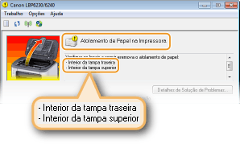
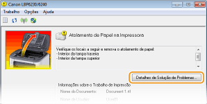
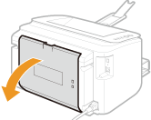
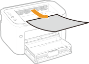
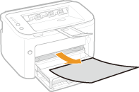
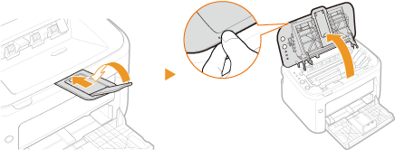
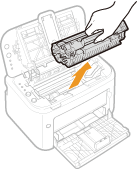
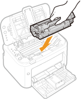

0KU8-03E
Se o papel encravar, o indicador  (Alarme) piscará, e a mensagem <Atolamento de Papel na Impressora> e os locais do atolamento são exibidos na Janela de Status da Impressora. Remova o papel encravado na ordem exibida de locais de atolamento, seguindo os procedimentos descritos nas seções indicadas abaixo. Antes de começar, leia atenciosamente as instruções de segurança em Instruções de segurança importantes.
(Alarme) piscará, e a mensagem <Atolamento de Papel na Impressora> e os locais do atolamento são exibidos na Janela de Status da Impressora. Remova o papel encravado na ordem exibida de locais de atolamento, seguindo os procedimentos descritos nas seções indicadas abaixo. Antes de começar, leia atenciosamente as instruções de segurança em Instruções de segurança importantes.
(Alarme) piscará, e a mensagem <Atolamento de Papel na Impressora> e os locais do atolamento são exibidos na Janela de Status da Impressora. Remova o papel encravado na ordem exibida de locais de atolamento, seguindo os procedimentos descritos nas seções indicadas abaixo. Antes de começar, leia atenciosamente as instruções de segurança em Instruções de segurança importantes.
<Interior da tampa traseira>
<Interior da tampa superior>
|
|
|
Ao remover o papel encravado, não DESLIGUE a impressora
DESLIGAR a impressora exclui os dados que estão sendo impressos.
Se o papel rasgar
Remova todos os fragmentos de papel para evitar que eles encravem.
Se o papel encrava repetidamente
Bata a pilha de papel em uma superfície plana para igualar as bordas do papel antes de carregá-lo na impressora.
Verifique se o papel é apropriado para a impressora. Papel
Verifique se os fragmentos de papel encravados permanecem na impressora.
Se você usa um papel com superfície grossa, defina o [Tipo de papel] como [Papel áspero 1] (16,0 a 23,9 lb Bond [60 a 90 g/m²]) ou [Papel áspero 2] (24,0 lb Bond a 60,3 lb Cover [91 a 163 g/m²]). Operações básicas de impressão
Não remova à força o papel encravado da impressora
Remover o papel à força pode danificar as peças da impressora. Se você não é capaz de remover o papel, entre em contato com seu agente local autorizado Canon ou a linha de ajuda Canon. Quando um problema não puder ser resolvido
|
 |
|
Se você clicar em [Detalhes de Solução de Problemas], você pode exibir os mesmos métodos de solução de problemas que estão descritos neste manual.
 |
Se o papel obstruído não puder ser facilmente resolvido, não o puxa com força. Em vez disso, siga o procedimento para um local diferente de obstrução de papel indicado pela mensagem.
1
Abra a tampa traseira.

2
Retire o papel cuidadosamente.

3
Feche a tampa traseira.
»
Continue em Obstruções de Papel dentro da Tampa Superior
Se o papel obstruído não puder ser facilmente removido, não tente puxá-lo à força. Continue na próxima etapa.
1
Retire o papel cuidadosamente.
|
|
Bandeja de saída
 |
|
Abertura de alimentação manual
 |
|
|
Bandeja multifuncional
Dobre a tampa da bandeja e então, retire o papel. Se houver papel carregado na bandeja multifuncional, remova-o antes de continuar com a liberação de obstruções de papel.
 |
||
2
Feche a bandeja auxiliar, e abra a tampa superior.

3
Remova o cartucho de toner.

4
Verifique se o papel está atolado dentro da guia de saída de papel.
|
1
|
Abra a guia de saída de papel.
Mantenha pressionado o botão verde, e então, puxe a guia de saída de papel em sua direção.
 |
|
2
|
Retire o papel cuidadosamente.
 |
|
3
|
Feche a guia de saída de papel.
Verifique se ambos os lados esquerdo e direito da guia estão firmemente fechados.
 |
5
Retire o papel cuidadosamente.
Seguras as duas bordas do papel, puxe a borda de saída do papel para baixo e depois, puxe-a para fora.

6
Reinstale o cartucho de toner.

7
Feche a tampa superior.
 |
A mensagem de papel atolado desaparece e a máquina está pronta para imprimir.
|